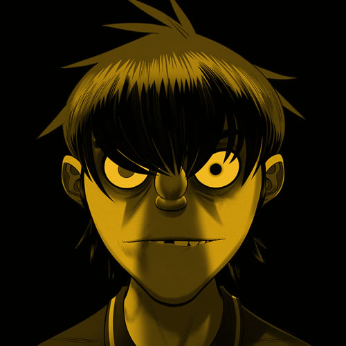

Gorillaz es una banda virtual británica creada en 1998 por Damon Albarn y Jamie Hewlett. La banda está compuesta por cuatro miembros ficticios: 2-D, Murdoc Niccals, Noodle y Russel Hobbs. La mayoría de sus canciones junto con todo su universo ficticio, se presentan a través de vídeos musicales animados, de animación tradicional y animación por computadora, entrevistas y pequeños cortos animados. En la realidad, Albarn es el único miembro músico permanente de la banda. El productor y ejecutivo A&R Remi Kabaka Jr. empezaría a colaborar con el grupo en 2016 después de proveer por varios años la voz de Russel Hobbs y sería nombrado miembro oficial junto a Albarn y Hewlett en 2019 en el documental de Gorillaz, Gorillaz: Reject False Icons.
Historia
Integrantes
2-D
Instrumento: Vocalista principal, teclados, piano y melódicas.
Años en la Banda: 1998 al presente.
Actores de Voz: Nelson De Freitas (2000-2017); Kevin Bishop (2017-presente).
Info Adicional: 2-D (Stuart Harold Pot), nacido el 23 de Mayo de 1978 en Crawley, Inglaterra, es un personaje ficticio creado por Damon Albarn y Jamie Hewlett. De carácter amable pero muy torpe, inocente y distraído. Se caracteriza sobre todo por su extraño pelo azul el cual fue causado después de caer de un árbol y perderlo, por lo cual, volvió a crecer de este color, y sus ojos completamente negros causados por un accidente que tuvo con Murdoc Niccals lo cual hizo que se acumulara sangre en su ojo, quien lo unió a la banda por su increíble voz y su aspecto, increíblemente tierno, sabiendo que era una completa atracción para las chicas.

Murdoc
Instrumento: Bajo y máquina de ritmos.
Años en la Banda: 1998 al presente.
Actores de Voz: Phil Cornwell (2000-presente).
Info Adicional: Murdoc Niccals, nacido el 6 de Junio de 1966, en Stoke-on-Trent, Inglaterra. Es un personaje ficticio creado por Damon Albarn y Jamie Hewlett. De carácter sádico, agresivo y malvado. Es completamente macabro y un seguidor de Satanás, por lo cual lleva un collar con una cruz invertida. (Actualmente sigue llevando su cruz, pero ya se ha alejado mucho del satanismo). Desde un principio su único interés fue el dinero, aunque realmente aprecia a la banda. Le gusta molestar y maltratar a 2D y casi nunca admite cuando se equivoca.
Noodle
Instrumento: Guitarras, teclados y voces.
Años en la Banda: 1998-2006, 2012 al presente.
Actores de Voz: Haruka Kuroda (2000-2016); Haruka Abe (2018-presente).
Info Adicional: Noodle, nacida el 31 de octubre de 1990, es un personaje ficticio creado por Damon Albarn y Jamie Hewlett. Llegó a la banda siendo una niña muy pequeña sin recordar nada de su pasado, y obtuvo el puesto por ser una excelente guitarrista. De carácter tranquilo y muy inteligente, es la persona más normal en el grupo y la voz de la razón, por lo que los demás le tienen mucho respeto. Además de talentosa compositora y artista marcial, es quien generalmente está detrás de todo el proceso artístico de los discos (aunque Murdoc siempre le robe todo el crédito).
Russel
Instrumento: Batería y percusión.
Años en la Banda: 1998-2006, 2012 al presente.
Actores de Voz: Remi Kabaka Jr. (2000-presente).
Info Adicional: Russel Hobbs, nacido el 3 de Junio de 1975, en Nueva York, Estados. Es un personaje ficticio creado por Damon Albarn y Jamie Hewlett. Conocido por sus buenos modales y buen habla, asistió a la Escuela Xavier para Jóvenes Talentos, pero fue expulsado luego de atacar a varios estudiantes estando poseído por un demonio. Estuvo en coma los siguientes cuatro años y finalmente el demonio fue exorcizado de su cuerpo por el Padre Merrin.